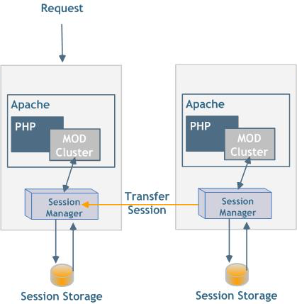

Zend Server in Docker Swarm:
Deployment and More
Jan Burkl
Solution Consulting Manager
Rogue Wave Software
ZendCon 2017, Las Vegas, October 26th 2017
Docker
Dockerfile (Prod)
FROM php:7.0-fpm
RUN apt-get update && apt-get install -y git libcurl4-gnutls-dev zlib1g-dev libicu-dev g++ libxml2-dev libpq-dev \
&& git clone -b php7 https://github.com/phpredis/phpredis.git /usr/src/php/ext/redis \
&& docker-php-ext-install redis \
&& apt-get autoremove && apt-get autoclean \
&& rm -rf /var/lib/apt/lists/*
#-------------------------------------------------------------------------------
# App sources
#-------------------------------------------------------------------------------
COPY . /app/
Dockerfile (Dev)
FROM janatzend/particulum-mobile-backend
WORKDIR /
ADD http://www.zend.com/en/download/4843?start=true /zend-debugger
RUN \
echo zend_extension=/zend-debugger/ZendDebugger-linux-x86_64/php-7.0.x/ZendDebugger.so >> /usr/local/etc/php/php.ini && \
echo zend_debugger.allow_from_all=1 >> /usr/local/etc/php/php.ini

Redis Container
$ docker run -d --name redis redis:3.2.7-alpine
PHP container
$ docker run -d --name php \
-v "$PWD:/app" \
--link redis:redis \
particulummobile-dev/backend
Nginx Container
$ docker run -d --name nginx \
-v "$PWD:/app" \
-v "$PWD/etc/nginx.site.conf:/etc/nginx/conf.d/default.conf" \
--link php:backend-entry-point \
-p 8888:80 \
particulummobile-dev/backend-nginx
Docker Compose
version: "3"
services:
#-------------------------------------------------------------------------------
# Nginx
#-------------------------------------------------------------------------------
nginx:
build:
context: "${PROJECTS_PATH}/${BACKEND_APP_DIR}"
dockerfile: Dockerfile.nginx
image: particulummobile-dev/backend-nginx
volumes:
- "${PROJECTS_PATH}/${BACKEND_APP_DIR}/etc/nginx.site.conf:/etc/nginx/conf.d/default.conf"
- "${PROJECTS_PATH}/${BACKEND_APP_DIR}:/app"
environment:
- TCP_PORTS=80,10081
- EXCLUDE_PORTS=443,10082
- EXTRA_SETTINGS=capture request header origin len 128,http-response add-header Access-Control-Allow-Origin %[capture.req.hdr(0)] if { capture.req.hdr(0) -m found },rspadd Access-Control-Allow-Headers:\ Origin\,\ X-Requested-With\,\ Content-Type\,\ Accept if { capture.req.hdr(0) -m found }
networks:
backend-net:
#-------------------------------------------------------------------------------
# php-fpm
#-------------------------------------------------------------------------------
php:
build:
context: "${PROJECTS_PATH}/${BACKEND_APP_DIR}"
dockerfile: Dockerfile.dev.vanilla-php
image: particulummobile-dev/backend
labels:
com.roguewave.particulummobile.description: "Zend Expressive Backend for Particulum Mobile app"
com.roguewave.particulummobile.service: "particulum-mobile-backend"
volumes:
- "${PROJECTS_PATH}/${BACKEND_APP_DIR}:/app"
networks:
backend-net:
aliases:
- backend-entry-point
#-------------------------------------------------------------------------------
# Redis
#-------------------------------------------------------------------------------
redis:
image: redis:3.2.7-alpine
networks:
backend-net:
networks:
backend-net:
Scaling
$ docker-compose scale php=5
Load Balancer?
Docker Swarm (Mode)
“Current versions of Docker include swarm mode for natively managing a cluster of Docker Engines called a swarm. Use the Docker CLI to create a swarm, deploy application services to a swarm, and manage swarm behavior.”
cloud.docker.com
- Beta
- Service Provider
- AWS
- Azure
- On Premise
play-with-docker.com
Init / Manager
$ docker swarm init --advertise-addr 192.168.99.121
Swarm initialized: current node (bvz81updecsj6wjz393c09vti) is now a manager.
To add a worker to this swarm, run the following command:
docker swarm join \
--token SWMTKN-1-3pu6hszjas19xyp7ghgosyx9k8atbfcr8p2is99znpy26u2lkl-1awxwuwd3z9j1z3puu7rcgdbx \
172.17.0.2:2377
To add a manager to this swarm, run 'docker swarm join-token manager' and follow the instructions.
Services
Example:
Docker Swarm Visualizer
https://github.com/dockersamples/docker-swarm-visualizer
Create Service
$ docker service create \
--name=viz \
--publish=8080:8080/tcp \
--constraint=node.role==manager \
--mount=type=bind,src=/var/run/docker.sock,dst=/var/run/docker.sock \
dockersamples/visualizer
Routing Mesh
“The routing mesh enables each node in the swarm to accept connections on published ports for any service running in the swarm, even if there’s no task running on the node.”
Ingress Network

Building images
self-contained
Makefile
App Services
Docker Compose v3
Zend Server
https://github.com/janatzend/docker-zendserver
Helpers
/run.sh
source /shell_functions.rc
trap "remove_from_cluster; exit" SIGINT SIGTERM SIGHUP
Web API
./etc/shell_functions.rc
WEB_API_KEY=docker
WEB_API_SECRET=$(cat /webapi/secret)
ZS_MANAGE=/usr/local/zend/bin/zs-manage
Joining Cluster
$ZS_MANAGE server-add-to-cluster \
-n $HOSTNAME \
-i $IP \
-o $DB_HOST:3306 -u $DB_USER -p $DB_PASS -d $DB_NAME \
-N $WEB_API_KEY -K $WEB_API_SECRET -s
Leaving Cluster
$ZS_MANAGE cluster-disable-server \
$SERVER_ID -N $WEB_API_KEY -K $WEB_API_SECRET -s
$ZS_MANAGE cluster-remove-server \
$SERVER_ID -N $WEB_API_KEY -K $WEB_API_SECRET -f
Config Import
$ZS_CLIENT_A configurationImport \
--configFile="/zs_config.zip" \
--output-format="kv"
Session Clustering
Session Clustering
$ZS_MANAGE store-directive \
-d 'session.save_handler' -v 'cluster' \
-N $WEB_API_KEY -K $WEB_API_SECRET
Health Check
$ZS_CLIENT clusterGetServerStatus \
--servers=$(cat /usr/local/zend/etc/conf.d/ZendGlobalDirectives.ini | grep zend.node_id | awk -F'=' '{print $2}') \
--zsurl="http://localhost:10081" \
--zskey=$WEB_API_KEY --zssecret=$WEB_API_SECRET \
--output-format=kv \
| grep status | grep OK || exit 1
Updates
Benefits
Containers self-contained
- Everything in VCS
- Running in every Docker env
Docker Compose
Stack Deployment via YAML file
DANKE SCHÖN
Contact me: jan.burkl [at] roguewave.com
Follow me: @janatzend